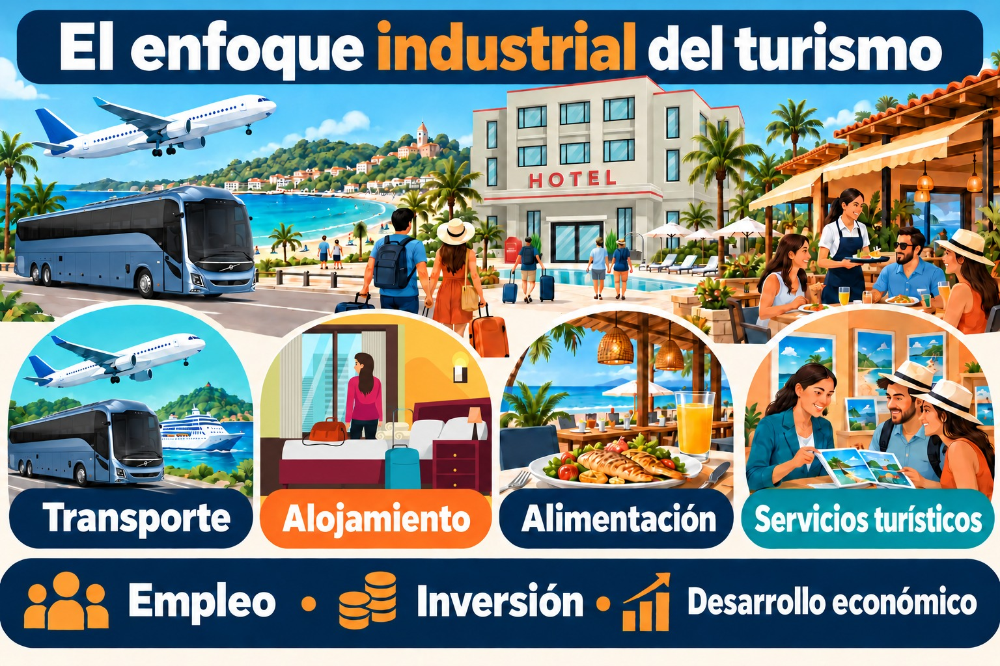
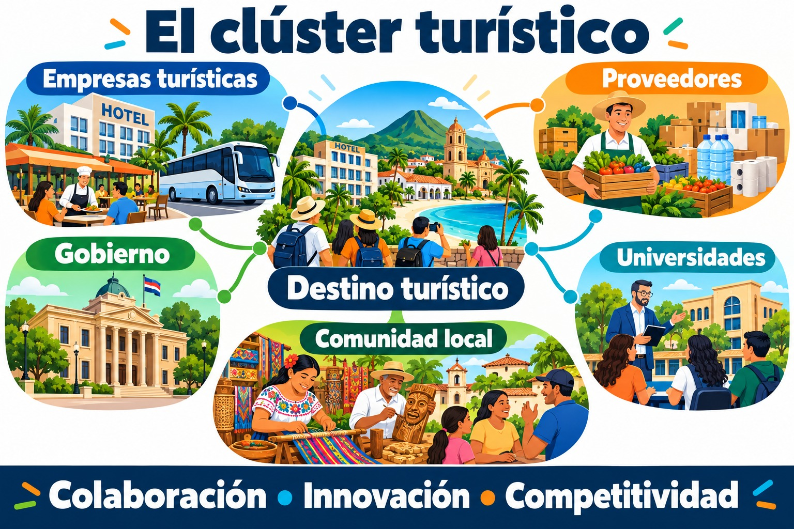

Unidad I · Tema 1.5
El enfoque industrial del turismo
Toda empresa o cadena de valor interdependiente y un sistema dinámico donde la colaboración y el clúster potencian la competitividad permita a los estados o pueblos participar.
1.5.1¿Qué es el enfoque industrial?
Conjunto articulado de actividades productivas interconectadas que generan valor económico, social y cultural.
Este enfoque nos permite comprender que el turismo conforma una cadena productiva viva: como en toda cadena, la debilidad o falla de un solo eslabón compromete la calidad y la percepción de la experiencia global.

La infografía reúne cuatro sectores básicos de la industria turística y lo que producen juntos: empleo, inversión y desarrollo económico.
Son solo una parte de la cadena: en el subtema 1.5.2 la industria se desglosa en diez sectores interdependientes, y en 1.5.3 se explica cómo cada eslabón agrega valor a la experiencia del visitante.
1.5.2Componentes de la industria turística
La estructura de la industria turística se conforma por diez sectores interdependientes:
- Sector de alojamiento: hoteles, moteles, hostales, casas rurales, campings, villas y plataformas de alquiler vacacional.
- Sector de alimentos y bebidas: restaurantes de autor, cafeterías, bares tradicionales, servicios de banquetes y food trucks gastronómicos.
- Sector de transporte: aerolíneas, líneas terrestres de autobuses, ferrocarriles panorámicos, cruceros, arrendadoras de autos y transporte público urbano.
- Sector de atractivos y actividades: parques temáticos, zonas arqueológicas, museos, monumentos históricos, reservas naturales y deportes de aventura.
- Sector de intermediación: agencias de viajes minoristas, turoperadores receptivos y emisivos, plataformas de viaje en línea (OTAs) y centrales de reservas (GDS).
- Sector de servicios complementarios: instituciones bancarias, casas de cambio, pólizas de asistencia médica, comercio formal y tiendas de souvenirs.
- Sector público y gubernamental: secretarías de turismo, organismos de promoción turística, municipios y entidades normativas.
- Comunidad local: residentes anfitriones, cooperativas de artesanos, guías locales y microemprendedores comunitarios.
- Sector educativo e investigación: universidades, escuelas de hospitalidad, centros de certificación y observatorios turísticos.
- Sector tecnológico: desarrolladores de software hotelero, aplicaciones móviles de guiado, plataformas de inteligencia artificial y soluciones de realidad virtual.
1.5.3La cadena de valor del turismo
La cadena de valor describe el proceso secuencial mediante el cual se genera valor agregado para el visitante:
- Actividades primarias: los servicios directamente involucrados en la experiencia del cliente (hospedaje, transporte de conexión, oferta gastronómica, tours y entretenimiento en destino).
- Actividades de apoyo: la infraestructura operativa transversal (gestión del talento humano, desarrollo e innovación tecnológica, compras y abastecimiento sustentable).
- Margen de valor: la diferencia positiva generada entre lo que el turista está dispuesto a pagar por la experiencia recibida y el costo total en que incurre la industria para producirla.
1.5.4El clúster turístico
Concentración geográfica de empresas que compiten en el mercado, pero al mismo tiempo cooperan activamente para fortalecer el destino común. Ejemplos destacados incluyen el clúster de Cancún, el de la Riviera Maya, el de San Miguel de Allende o el de San Carlos de Bariloche.

La infografía presenta el clúster como una red de actores alrededor del destino: empresas turísticas, proveedores, gobierno, universidades y comunidad local.
Lo que distingue a un clúster es que sus integrantes compiten y cooperan al mismo tiempo. Sus ventajas y riesgos se detallan a continuación.
Ventajas del clúster:
- Mayor eficiencia: uso compartido y optimización de recursos e infraestructura.
- Innovación y conocimiento: intercambio constante de mejores prácticas y metodologías entre competidores.
- Atracción de inversiones: mayor certidumbre y visibilidad para atraer capital privado y fondos públicos.
- Posicionamiento de marca: fortalecimiento conjunto del destino en mercados internacionales.
- Poder de negociación: mayor capacidad de gestión ante aerolíneas, proveedores y órganos legislativos.
Desafíos y riesgos del clúster:
- Fricciones o competencia desleal interna entre prestadores.
- Conflictos por la utilización de recursos naturales o espacios públicos comunes.
- Peligro de monocultivo económico o excesiva dependencia de un único mercado emisor.
- Riesgo de sobreexplotación turística (overtourism) y pérdida de identidad cultural.
1.5.5Turismo como sistema
Desde la teoría general de sistemas, el turismo es un sistema abierto, complejo y dinámico compuesto por cuatro elementos estructurales:
- Entradas
- Procesos
- Salidas
- Retroalimentación
1.5.6El enfoque industrial aplicado al marketing
Permite transformar la visión tradicional de venta con los siguientes puntos:
- Pensar en red: dejar de vender un servicio aislado para promover una experiencia integral de destino.
- Generar alianzas estratégicas: crear sinergias comerciales entre hotelería, gastronomía, turoperadores y comunidades.
- Diversificar la cartera: no depender de una sola temporada o de un único perfil de consumidor.
- Innovar con tecnología: adoptar modelos de digitalización, automatización de reservas y experiencias inmersivas.
- Medir el impacto holístico: evaluar el retorno económico a la par del bienestar comunitario y la preservación ecológica.
- Garantizar la sostenibilidad: asegurar la viabilidad del destino a largo plazo protegiendo sus recursos fundacionales.